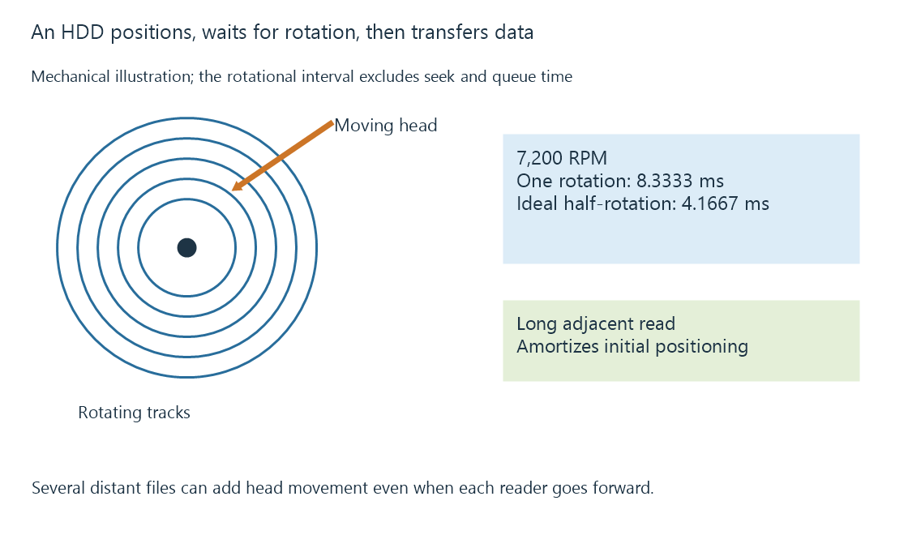

Hard disk drives: rotation, positioning and media workloads
A hard disk drive reads magnetic platters through moving heads, so positioning and rotation influence small and mixed workloads.
A hard disk drive stores data on rotating magnetic platters. Its heads move to the required tracks, then wait for the relevant sectors to arrive underneath them. Once positioned, a drive can read a long run of adjacent data without repeating the full positioning operation for every byte.
That makes HDDs well suited to storing large media collections and serving sustained reads. Their behavior changes when requests keep jumping between distant locations.
What 7,200 RPM actually tells you
At 7,200 revolutions per minute, one rotation takes about 8.33 milliseconds:
Rotation period = 60 seconds ÷ 7,200 = 0.008333... seconds
Ideal average rotational wait = half a rotation = 4.1667 ms
The second result assumes requests arrive at uniformly distributed rotational positions. It excludes head movement, controller work, queued requests and data transfer. It is not a promise that an arbitrary read completes in 4.17 ms.

RPM alone cannot rank complete drives. Track layout, recording density, firmware, workload and request size also affect results. Even one drive can have different sustained transfer rates across its recording surface.
Several films can create repeated head movement
Each player may read forward through its own film. The drive still has to alternate between their locations, as well as artwork requests, scans or background writes. Read-ahead and request scheduling can combine operations, but they do not make several distant files occupy one continuous run.
When playback buffers already contain enough data, short positioning delays can be invisible. A library scan may expose the same delays as slower progress through many files. Storage latency describes that response-time aspect separately from bulk transfer speed.
CMR and SMR affect the write workload
Conventional magnetic recording leaves tracks that can be rewritten without the shingled dependency of overlapping tracks. Shingled magnetic recording increases density by overlapping tracks, which introduces additional data-management work when existing regions are updated.
With drive-managed SMR, firmware preserves the ordinary block-device interface and handles that work internally. A fast initial write can consume a staging area; later writes may have to wait for rearrangement. Host-managed SMR exposes sequential-write constraints that require suitable host software. These are distinct arrangements.
This distinction is especially relevant to repeated imports, recording, rebuilding or other sustained writes. It does not imply that every read from an SMR drive is slow. Evaluate the exact model and operation, rather than deriving suitability from capacity or RPM alone.
An idle HDD may also spin down. The first access then includes a wake delay before normal positioning and transfer begin.
See Also
- Sequential and random I/O in media workloads
- Disk spin-down, wake latency and idle workloads
- SATA storage and negotiated interface rates